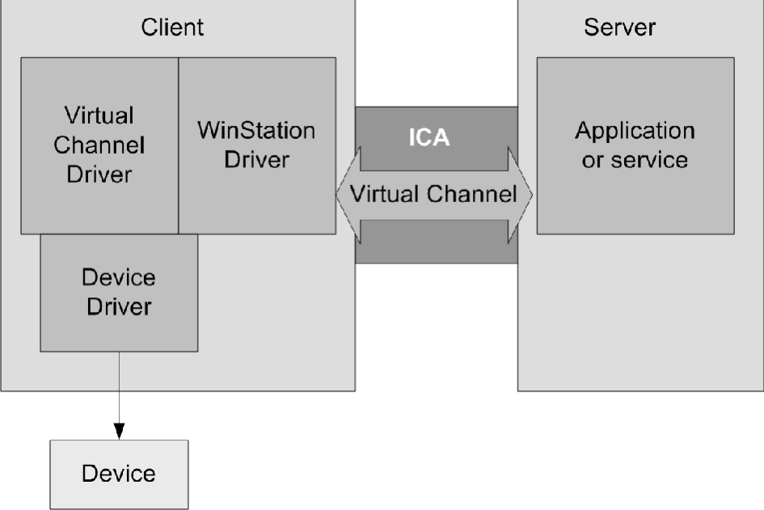

Architecture
A Citrix Independent Computing Architecture (ICA) virtual channel is a bidirectional error-free connection for the exchange of generalized packet data between a server running Citrix XenApp and a client device. Developers can use virtual channels to add functionality to clients. Uses for virtual channels include:
-
Support for administrative functions
-
New data streams (audio and video)
-
New devices, such as scanners, card readers, and joysticks)
Virtual Channel Overview
An ICA virtual channel is a bidirectional error-free connection for the exchange of generalized packet data between a client and a server running Citrix XenApp or XenDesktop. Each implementation of an ICA virtual channel consists of two components:
Server-side portion on the computer running XenApp or XenDesktop
The virtual channel on the server side is a normal Win32 process; it can be either an application or a Windows NT service.
Client-side portion on the client device
The client-side virtual channel driver is a dynamically loadable module (.DLL) that executes in the context of the client. You must write your virtual driver.
This figure illustrates the virtual channel client-server connection:

The WinStation driver is responsible for demultiplexing the virtual channel data from the ICA data stream and routing it to the correct processing module (in this case, the virtual driver). The WinStation driver is also responsible for gathering and sending virtual channel data to the server over the ICA connection.
The following is an overview of client-server data exchange using a virtual channel:
-
The client connects to the server running XenApp or XenDesktop. The client passes information about the virtual channels it supports to the server.
-
The server-side application starts, obtains a handle to the virtual channel, and optionally queries for additional information about the channel.
-
The client-side virtual driver and server-side application pass data using the following two methods:
-
If the server application has data to send to the client, the data is sent to the client immediately. When the client receives the data, the WinStation driver demultiplexes the virtual channel data from the ICA stream and passes it immediately to the client virtual driver.
-
If the client virtual driver has data to send to the server, the data is sent by using the QueueVirtualWrite call for the newly written virtual drivers. The data can be sent at any point that the virtual driver is processing the main process control flow. Do not send data from a thread within a virtual driver. Note that there is no way to alert the server virtual channel application that the data was received.
-
-
When the server virtual channel application is finished, it closes the virtual channel and frees any allocated resources.
ICA and Virtual Channel Data Packets
Virtual channel data packets are encapsulated in the ICA stream between the client and the servers. Because ICA is a presentation-level protocol and runs over several different transports, the virtual channel application programming interface (API) enables developers to write their protocols without worrying about the underlying transport. The data packet is preserved.
For example, if 100 bytes are sent to the server, the same 100 bytes are received by the server when the virtual channel is demultiplexed from the ICA data stream. The compiled code runs independently of the currently configured transport protocol.
The ICA engine provides the following services to the virtual channel:
Packet encapsulation
ICA virtual channels are packet-based, meaning that if one side performs a write with a certain amount of data, the other side receives the entire block of data when it performs a read. This contrasts with TCP, for example, which is stream-based and requires a higher-level protocol to parse out packet boundaries. Stated another way, virtual channel packets are contained within the ICA stream, which is managed separately by system software.
Error correction
ICA provides its own reliability mechanisms even when the underlying transport is unreliable. This guarantees that connections are error free and that data is received in the order in which it is sent.
Flow control
The virtual channel API provides several types of flow control. This allows designers to structure their channels to handle only a specific amount of data at any one time. See Flow Control for more information.
Client WinStation Driver and Virtual Driver Interaction
The WinStation driver calls into the virtual driver on the event callbacks, timer callbacks, and on the periodic call to the DriverPoll function. The client runtime environment is single threaded and nonpreemptive; therefore, the virtual driver you write must never block. When control flow is passed to the virtual driver, the virtual driver must immediately perform the required operations and return control to the WinStation driver.
Because all transfers to the server require reserving an output buffer and buffers might be temporarily unavailable, the virtual driver must be prepared to delay sending all output until a later point.
The following process occurs when a user starts the client:
-
At client load time, the client engine reads the Configuration Storage in the configuration files to determine the modules to configure, including how to configure the virtual channel drivers.
-
The client engine loads the virtual channel drivers defined in the Configuration Storage in the configuration files by calling the Load function, which must be exported explicitly by the virtual channel driver .DLL. The Load function is defined in the static library file vdapi.a, which is provided in this SDK. Every driver must link with this library file. The Load function forwards the driver entry points defined in the .DLL to the client engine.
-
For each virtual channel, the WinStation driver calls the DriverOpen function, which establishes and initializes the virtual channel. The WinStation driver passes the addresses of the output buffer management functions in the WinStation driver to the virtual channel driver. The virtual channel driver passes the address of the ICADataArrival function to the WinStation driver. The WinStation driver calls the DriverOpen function for each virtual driver when the client loads, not when the virtual channel is opened by the server-side application.
-
When virtual channel data arrives from the server, the WinStation driver calls the ICADataArrival function for that virtual driver.
-
To send data, the virtual channel driver has two options:
-
To use the QueueVirtualWrite function which is simple to use and offers the option for immediate data transfer. This is the method that should be used for all new virtual drivers.
-
To use the deprecated client-side helper functions (these addresses are obtained during initialization) to reserve an output buffer, fill it with data, and write the buffer.
-
-
Outgoing data must be placed in the WinStation driver’s output buffers for transmission to the host. Checks for available space using OutBufReserve.
-
Fills in the buffer using AppendVdHeader and OutBufAppend.
-
Writes the data using OutBufWrite.
The WinStation driver does not preserve the output buffer data between calls to the virtual driver, so the virtual driver must complete the data output process before returning control.
Module.ini
The Receivers use settings stored in Module.ini to determine which virtual channels to load. Driver developers can also use Module.ini to store parameters for virtual channels. Module.ini changes are effective only before the installation. After the installation, you must modify the Configuration Storage in the configuration files to add or remove virtual channels.
Use the memory INI functions to read data from Configuration Storage.
Virtual Channel Packets
ICA does not define the contents of a virtual channel packet. The contents are specific to the particular virtual channel and are not interpreted or managed by the ICA data stream manager. You must develop your own protocol for the virtual channel data.
A virtual channel packet can be any length up to the maximum size supported by the ICA connection. This size is independent of size restrictions on the lower-layer transport. These restrictions affect the server-side WFVirtualChannelRead and WFVirtualChannelWrite functions and the QueueVirtualWrite and SendData functions on the client side. The maximum packet size is 5000 bytes (4996 data bytes plus 4 bytes of packet overhead generated by the ICA datastream manager).
Both the virtual driver and the server-side application can query the maximum packet size. See DriverOpen for an example of querying the maximum packet size on the client side.
Flow Control
ICA virtual channels provide support for downstream (server to client) flow control, but there is currently no support for upstream flow control. Data received by the server is queued until used.
Some transport protocols such as TCP/IP provide flow control, while others do not. If data flow control is needed, you might need to design it into your virtual channel.
Choose one of three types of flow control for an ICA virtual channel: None, Delay, or ACK. Each virtual channel can have its own flow control method. The flow control method is specified by the virtual driver during initialization.
None
ICA does not control the flow of data. It is assumed the client can process all data sent. You must implement any required flow control as part of the virtual channel protocol. This method is the most difficult to implement but provides the greatest flexibility. The Ping example does not use flow control and does not require it.
Delay
Delay flow control is a simple method of pacing the data sent from the server. When the client virtual driver specifies delay flow control, it also provides a delay time in milliseconds. The server waits for the specified delay time between each packet of data it sends.
ACK
ACK flow control provides what is referred to as a sliding window. With ACK flow control, the client specifies its maximum buffer size (the maximum amount of data it can handle at any one time). The server sends up to that amount of data. The client virtual driver sends an ACK ICA packet when it completes processing all or part of its buffer, indicating how much data was processed. The server can then send more data bytes up to the number of bytes acknowledged by the client.
This ACK is not transparent—the virtual driver must explicitly construct the ACK packet and send it to the server. The server sends entire packets; if the next packet to be sent is larger than the window, the server blocks the send until the window is large enough to accommodate the entire packet.